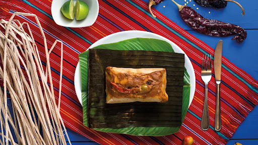

Tamal
El platillo más icónicos y sabrosos de Guatemala: el tamal. Este manjar tradicional es una verdadera joya de la cocina guatemalteca que te transportará a un mundo de sabores auténticos y reconfortantes.
El tamal es una deliciosa preparación hecha a base de masa de maíz sazonada con una mezcla de especias y condimentos únicos, que pueden incluir achiote, tomate, chiles y otras hierbas aromáticas. Esta masa se rellena tradicionalmente con una variedad de ingredientes, como carne de cerdo, pollo o res, acompañada de aceitunas, pasas y chiles, todo envuelto cuidadosamente en hojas de maíz y cocido al vapor hasta alcanzar una textura tierna y suculenta.
Cada bocado de tamal es una explosión de sabores y aromas que te transportará directamente a las coloridas calles y mercados de Guatemala. Se sirve tradicionalmente caliente y se acompaña con una deliciosa salsa de tomate y cebolla, que realza aún más su sabor único y reconfortante.
¡Te aseguro que cada bocado será una experiencia inolvidable!
están disponibles los Tamales de pollo a tan solo Q10 y Tamalaes de res a Q12.00
